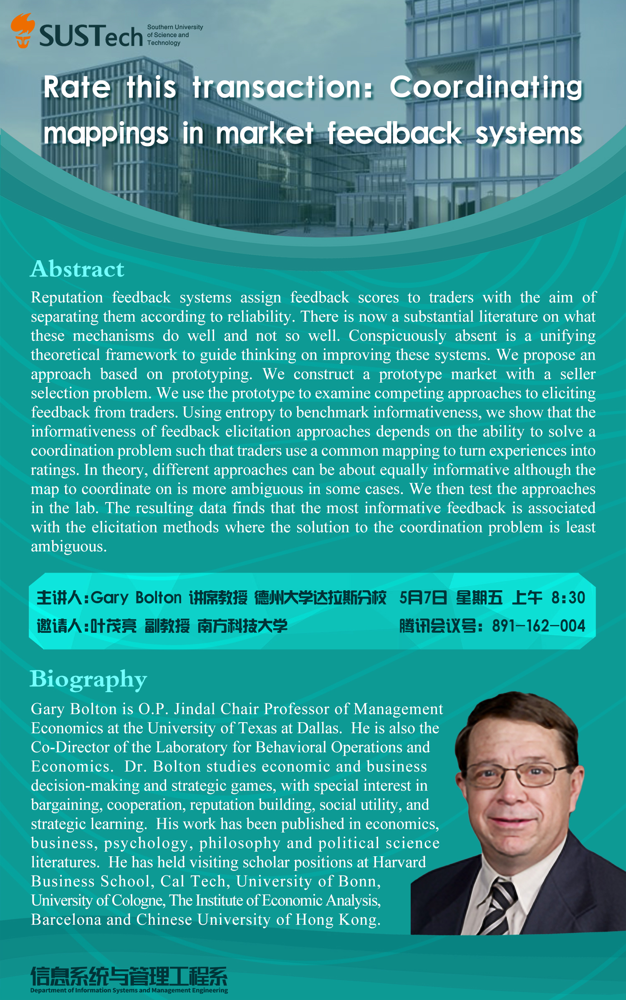

应叶茂亮副教授的邀请，德州大学达拉斯校区Gary Bolton教授于5月7日上午为信管系、商学院和南科大师生在腾讯会议上带来题为Rate this Transaction:Coordinating Mappings in Market Feedback Systems的学术讲座。Gary Bolton教授是管理经济学Jindal讲席教授，研究发表于经济学、管理学、心理学、哲学、政治学等学科顶级刊物。他是实验经济学、行为经济学、管理经济学、行为运营的国际领军学者，做了经济学与信息系统、运营管理的大量交叉研究，还担任管理学顶尖刊物Management Science行为分析部门（Behavioral Analysis）的副主编（associate editor）。
信管系系主任柯玮玲教授、黄伟讲席教授等商学院师生、国内外各大高校相关华人学界同行在线参与热烈讨论，讲座受师生广泛好评。该讲座进一步促进商学院和国内同行及国际知名学者的交流，提升南科大商学院在国内外经管学界的知名度。
